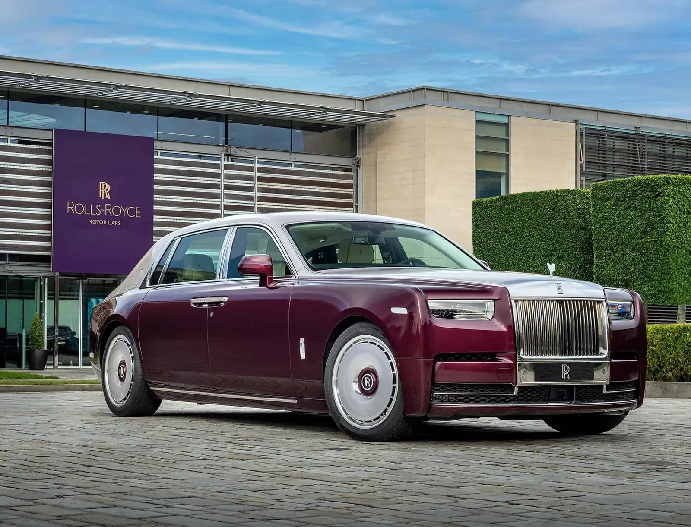
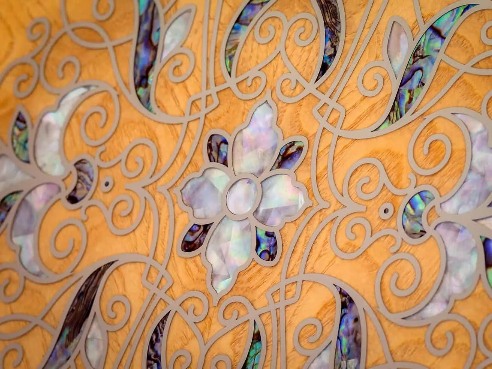
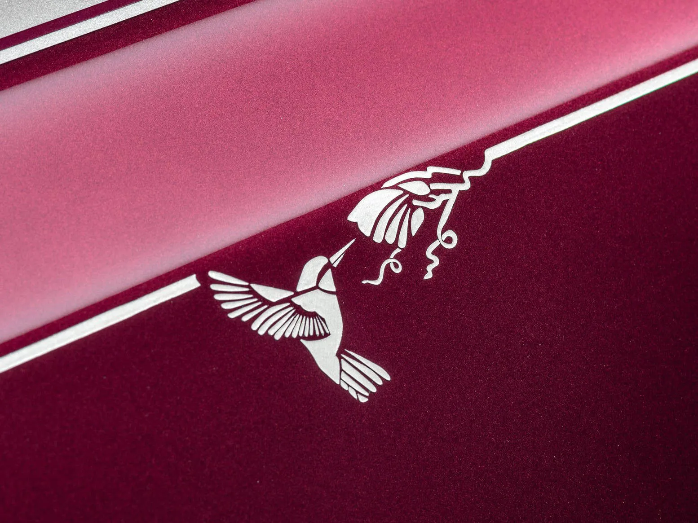
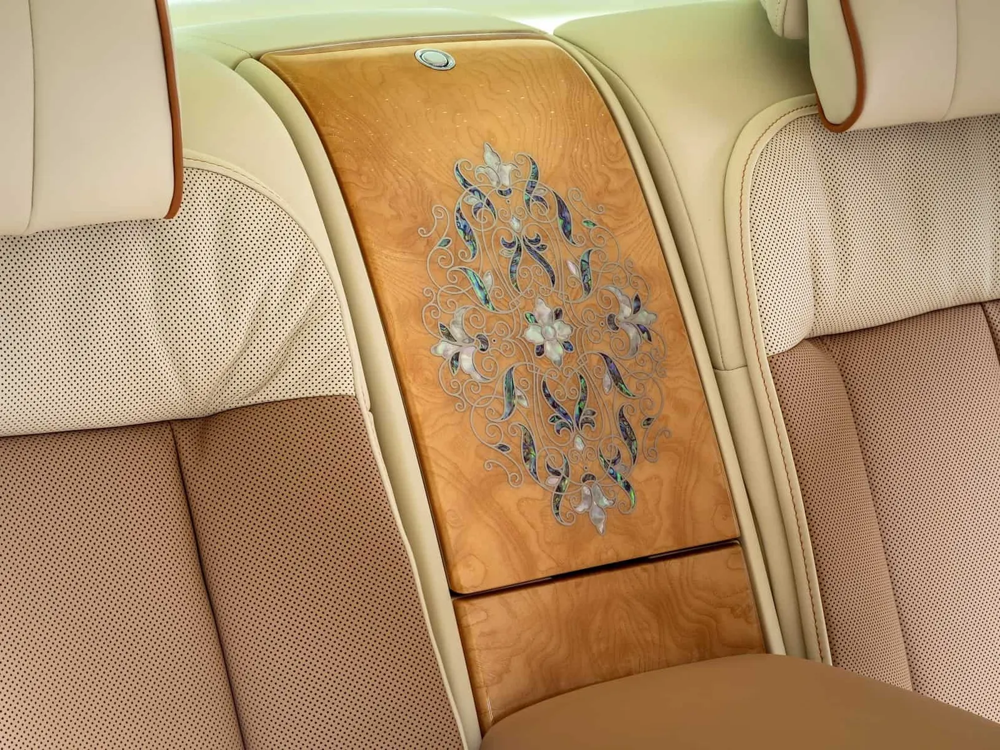

▲ 굿우드 롤스로이스 본사에서 공개된 '팬텀 허밍버드' 실차. 하단 와일드베리·상단 화이트 샌즈의 바이톤 도장이 적용됐다 ⓒ Rolls-Royce Motor Cars
전복 껍데기로 자동차 내장재를 만든다면 믿을 수 있을까.
롤스로이스가 지난 9월 15일(현지시간) 영국 굿우드에서 공개한 비스포크 '팬텀 허밍버드'는 그 상상을 실물로 옮긴 차다. 전복 껍데기 내부의 자개층(나크레)과 진주모를 결합해 벌새(허밍버드) 깃털 특유의 무지갯빛을 재현한 마케트리를 세계 최초로 적용했다. 제작 대수는 단 한 대. 한 고객이 아내에게 바치는 헌정 선물로 두바이 프라이빗 오피스를 통해 의뢰한 차량이다.
1. 무슨 일이 있었나 — 굿우드에서 공개된 단 한 대의 팬텀
'팬텀 허밍버드(Phantom Hummingbird)'는 롤스로이스의 커스텀 주문 제작 부서인 프라이빗 오피스 두바이(Private Office Dubai)를 통해 의뢰된 원오프 비스포크 차량이다. 팬텀 익스텐디드를 기반으로 하며, 2026년 9월 15일(현지시간) 영국 굿우드에서 처음 공개됐다.
외관은 와일드베리(Wildberry)와 화이트 샌즈(White Sands) 두 가지 색을 조합한 바이톤 도장에, 실내 마케트리와 짝을 이루는 벌새 그래픽을 손으로 그려 넣었다. 롤스로이스 측은 이 차량을 "전복 껍데기라는 새로운 소재를 통해 디자이너와 장인들에게 창의적·기술적 도전을 안긴 프로젝트"라고 설명했다.

▲ 완성된 벌새 마케트리 클로즈업. 무지갯빛으로 일렁이는 전복 껍데기 조각이 애쉬 버 베니어 위에 자리 잡았다 ⓒ Rolls-Royce Motor Cars
2. 전복 껍데기 마케트리, 왜 처음이었나
전복 껍데기는 자동차 마케트리 소재로는 이례적인 선택이다. 얇고 잘 부서지는 특성 때문에 기존 목재·카본 마케트리에 쓰던 절삭·접합 방식을 그대로 적용할 수 없었다. 롤스로이스는 전복 껍데기 내부의 자개층을 진주모와 결합해, 빛을 받으면 청록색으로 일렁이는 벌새 깃털의 무지갯빛 광택을 재현했다.
📍 왜 하필 벌새였나
고객은 아내를 향한 헌정의 의미로 벌새를 골랐다. 롤스로이스는 벌새가 "기쁨과 회복력, 그리고 매 순간에서 아름다움을 찾아내는 능력"을 상징한다고 설명하며, 이 상징을 실내 마케트리와 외장 그래픽 양쪽에 반복해 담았다.
새로운 소재는 곧 새로운 공정을 요구했다. 롤스로이스의 비스포크 장인들은 이 프로젝트를 위해 6가지 서로 다른 기법을 시험한 끝에, 정밀도와 내구성 기준을 동시에 만족하는 방식을 찾아냈다.
3. 0.06mm의 정밀도 — 45시간의 손작업
완성된 마케트리 패널은 뒷좌석 피크닉 테이블 2개와 워터폴 패널 1개, 총 3장이다. 조각 구성은 다음과 같다.
| 패널 | 문양 | 조각 수 |
|---|---|---|
| 뒷좌석 피크닉 테이블(좌·우 각 1개) | 벌새 | 각 53조각(날개 18조각 포함) |
| 워터폴 패널 | 식물(보태니컬) 모티프 | 84조각 |
제작 과정은 이렇다. 우선 레이저로 조각을 절단하되, 최종 크기보다 0.06mm 더 크게 잘라낸다. 이 여유분을 장인이 손으로 갈아내며 조각과 조각 사이의 이음매를 맞추는 것이다. 이런 방식으로 패널 1장을 완성하는 데 약 8시간이 걸렸고, 3장을 모두 만드는 데 총 45시간이 투입됐다. 여기에 이 기법 자체를 개발하는 데만 9개월 넘게 걸렸다.
✅ 목재 마케트리와 무엇이 다른가
· 전복 껍데기는 얇고 잘 부서져 기존 목재용 절삭 공차를 그대로 쓸 수 없었다
· 빛의 각도에 따라 색이 달라지는 무지갯빛(이리데센스) 때문에 조각 배치 순서에 따라 완성된 그림의 인상이 달라진다
· 그래서 롤스로이스는 최종 방식을 정하기 전 6가지 기법을 실제로 시험 제작했다

▲ 화이트 샌즈 코치라인 끝에 손으로 그려 넣은 벌새 그래픽. 실내 마케트리 문양과 짝을 이룬다 ⓒ Rolls-Royce Motor Cars
4. 비스포크 프로그램이란 — '단 한 대'가 가능한 이유
팬텀 허밍버드 같은 프로젝트가 가능한 건 롤스로이스의 비스포크(Bespoke) 프로그램 덕분이다. 색상·소재·문양을 고객이 처음부터 새로 정의할 수 있고, 이번처럼 전에 없던 소재를 도입하는 것도 가능하다. 이번 프로젝트는 두바이 지역 고객을 전담하는 '프라이빗 오피스 두바이'를 통해 진행됐다.
롤스로이스 관계자는 이번 프로젝트에 대해 "자연 세계는 늘 롤스로이스 비스포크 커미션의 풍부한 영감의 원천"이라고 밝혔다. 실제로 롤스로이스는 그동안 나비, 벌, 꽃 등 자연물을 모티프로 한 비스포크 차량을 여러 차례 선보여왔고, 이번 전복 마케트리는 그 연장선에서 소재 자체를 확장한 사례로 꼽힌다.
롤스로이스의 비스포크 프로젝트 소식은 공식 프레스클럽에서 확인할 수 있다. 롤스로이스 프레스클럽 원문 바로가기

▲ 뒷좌석 사이 워터폴 패널의 보태니컬 마케트리. 84조각의 전복 껍데기·진주모로 완성됐다 ⓒ Rolls-Royce Motor Cars
5. 관전 포인트 — 가격도, 사진도 아직 제한적인 이유
롤스로이스는 이번에도 가격을 공개하지 않았다. 비스포크 원오프 차량은 애초에 정가가 없고, 고객과의 협의로 최종 금액이 정해지는 구조이기 때문이다.
📍 색상과 소재, 그리고 연비
외장은 하단 와일드베리(Wildberry), 상단 화이트 샌즈(White Sands)의 바이톤 도장에 화이트 샌즈 코치라인을 둘렀다. 실내는 애쉬 버(Ash Burr) 베니어와 실버 버치·크림 라이트 가죽을 기본으로, 시트에는 모카신·탠 컬러 디테일과 시셸 카펫을 매치했다. 팬텀 익스텐디드 기반인 만큼 WLTP 복합 CO2 배출량은 362~373g/km 수준이다.
6. 요약
롤스로이스가 전복 껍데기와 진주모로 만든 마케트리를 세계 최초로 적용한 비스포크 '팬텀 허밍버드'를 단 한 대 제작해 공개했다. 뒷좌석 피크닉 테이블에 각각 53조각, 워터폴 패널에 84조각의 자개 조각을 배치했고, 0.06mm 단위로 레이저 절단한 뒤 손으로 마무리하는 데만 45시간이 걸렸다.
이 차량은 한 고객이 아내에게 바치는 헌정 선물로, 두바이 프라이빗 오피스를 통해 의뢰됐다. 벌새는 "기쁨과 회복력, 매 순간의 아름다움을 찾는 능력"을 상징하며, 외장에는 이를 반영한 손그림 벌새 그래픽이 더해졌다.
가격은 이번에도 공개되지 않았지만, 9개월 이상의 기법 개발과 6차례의 시행착오는 롤스로이스 비스포크 프로그램이 여전히 '한 대만을 위한 공정'에 얼마나 공을 들이는지 보여주는 사례로 남았다.